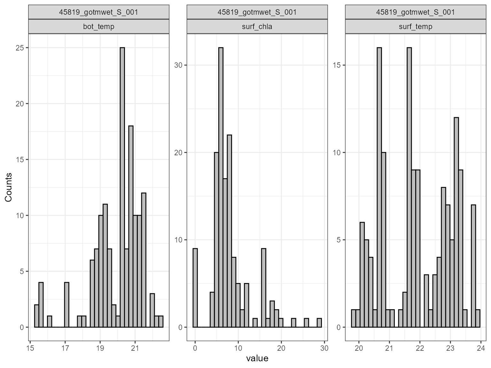

Setup
First, we will load the AEME and aemetools
package:
Create a folder for running the example calibration setup.
tmpdir <- "sa-test"
dir.create(tmpdir, showWarnings = FALSE)
aeme_dir <- system.file("extdata/lake/", package = "AEME")
# Copy files from package into tempdir
file.copy(aeme_dir, tmpdir, recursive = TRUE)
#> [1] TRUE
path <- file.path(tmpdir, "lake")
list.files(path, recursive = TRUE)
#> [1] "aeme.yaml" "data/catchment.dbf" "data/catchment.prj"
#> [4] "data/catchment.shp" "data/catchment.shx" "data/hypsograph.csv"
#> [7] "data/inflow_FWMT.csv" "data/lake.dbf" "data/lake.prj"
#> [10] "data/lake.shp" "data/lake.shx" "data/lake_obs.csv"
#> [13] "data/meteo.csv" "data/outflow.csv" "data/water_level.csv"
#> [16] "model_controls.csv"Build AEME ensemble
Using the AEME functions, we will build the AEME model
setup. For this example, we will use the glm_aed model. The
build_ensemble function will
aeme_data <- yaml_to_aeme(path = path, "aeme.yaml")
mod_ctrls <- read.csv(file.path(path, "model_controls.csv"))
inf_factor = c("dy_cd" = 1, "glm_aed" = 1, "gotm_wet" = 1)
outf_factor = c("dy_cd" = 1, "glm_aed" = 1, "gotm_wet" = 1)
model <- c("glm_aed")
aeme_data <- build_ensemble(path = path, aeme_data = aeme_data,
model = model, mod_ctrls = mod_ctrls,
inf_factor = inf_factor, ext_elev = 5,
use_bgc = TRUE)Description of Sensitivity Analysis method
The sensitivity analysis method used here is based on the Sobol
method and uses the sensobol package.
This package provides several functions to conduct variance-based uncertainty and sensitivity analysis, from the estimation of sensitivity indices to the visual representation of the results. It implements several state-of-the-art first and total-order estimators and allows the computation of up to fourth-order effects, as well as of the approximation error, in a swift and user-friendly way.
For more information on the method, see the sensobol package vignette.
Load parameters to be used for the sensitivity analysis
Parameters are loaded from the aemetools package within
the aeme_parameters dataframe. The parameters are stored in
a data frame with the following columns:
model: The model namefile: The file name of the model parameter filename: The parameter namevalue: The parameter valuemin: The minimum value of the parametermax: The maximum value of the parameter
Parameters to be used for the calibration. (man)
utils::data("aeme_parameters", package = "aemetools")
param <- aeme_parameters |>
dplyr::filter(file != "wdr")
param| model | file | name | value | min | max | module | description | default | group |
|---|---|---|---|---|---|---|---|---|---|
| glm_aed | glm3.nml | light/Kw | 0.5811660 | 0.10 | 5.52e+00 | hydrodynamic | NA | NA | NA |
| glm_aed | met | MET_wndspd | 1.1437400 | 0.70 | 1.30e+00 | hydrodynamic | NA | NA | NA |
| glm_aed | met | MET_radswd | 0.9661150 | 0.70 | 1.30e+00 | hydrodynamic | NA | NA | NA |
| glm_aed | glm3.nml | outflow/seepage_rate | 0.0000000 | -0.01 | 0.00e+00 | hydrodynamic | NA | NA | NA |
| gotm_wet | gotm.yaml | turbulence/turb_param/k_min | 0.0000006 | 0.00 | 1.00e-05 | hydrodynamic | NA | NA | NA |
| gotm_wet | gotm.yaml | light_extinction/g2/constant_value | 0.2000000 | 0.05 | 2.70e+00 | hydrodynamic | NA | NA | NA |
| gotm_wet | met | MET_wndspd | 1.0691700 | 0.70 | 1.30e+00 | hydrodynamic | NA | NA | NA |
| gotm_wet | met | MET_radswd | 1.1734000 | 0.70 | 1.30e+00 | hydrodynamic | NA | NA | NA |
| dy_cd | cfg | light_extinction_coefficient/7 | 0.9000000 | 0.10 | 1.40e+00 | hydrodynamic | NA | NA | NA |
| dy_cd | dyresm3p1.par | vertical_mixing_coeff/15 | 200.0000000 | 50.00 | 7.50e+02 | hydrodynamic | NA | NA | NA |
| dy_cd | met | MET_wndspd | 1.0000000 | 0.70 | 1.30e+00 | hydrodynamic | NA | NA | NA |
| dy_cd | met | MET_radswd | 1.0000000 | 0.70 | 1.30e+00 | hydrodynamic | NA | NA | NA |
Sensitivity analysis setup
Define fitness function
First, we will define a function for the sensitivity analysis
function to use to calculate the sensitivity of the model. This function
takes a dataframe as an argument. The dataframe contains the observed
data (obs) and the modelled data (model). The
function should return a single value.
Here we use the model mean.
# Function to calculate fitness
fit <- function(df) {
mean(df$model)
}Different functions can be applied to different variables. For example, we can use the mean for water temperature and median for chloophyll-a.
# Function to calculate fitness
fit2 <- function(df) {
median(df$model)
}Then these would be combined into a named list of functions which
will be passed to the sa_aeme function. They are named
according to the target variable.
# Create list of functions
FUN_list <- list(HYD_temp = fit, PHY_tchla = fit2)Define control parameters
Next, we will define the control parameters for the sensitivity
analysis. The control parameters are passed to the sa_aeme
function. The control parameters are as follows:
N: The initial sample size of the base sample matrix.ncore: The number of cores to use for the calibration. This is only used if parallel =TRUE. Default toparallel::detectCores() - 1.na_value: value to replace NA value when returned.parallel: Logical value. IfTRUE, the sensitivity analysis will be run in parallel. IfFALSE, it will be run in series.out_file: A character string naming a file for writing. Currently it can write to a .csv file or a database (.db; using the duckDB package) file. If writing to a database, it creates a table named “sa_output”.-
vars_sim: A named list of output variables for sensitivity analysis. The name is user defined but each list must contain:var: The variable name to use for the sensitivity analysis.month: A vector of months to use for the sensitivity analysis.depth_range: A vector of length 2 with the minimum and maximum depth range to use for the sensitivity analysis.
Here is an example for examining surface temperature (surf_temp) in the months December to February, bottom temperature (bot_temp), (10 - 13 m) and also total chlorophyll-a (PHY_tchla) at the surface (0 - 2 m) during the summer period.
ctrl <- list(N = 2^4, ncore = 10, na_value = 999, parallel = TRUE,
out_file = "results.csv",
vars_sim = list(
surf_temp = list(var = "HYD_temp",
month = c(12, 1:2),
depth_range = c(0, 2) # change to depth_range
),
bot_temp = list(var = "HYD_temp",
month = c(12, 1:2),
depth_range = c(10, 13)
),
surf_chla = list(var = "PHY_tchla",
month = c(12, 1:2),
depth_range = c(0, 2)
)
)
)Run sensitivity analysis
Once we have defined the fitness function, control parameters and
variables, we can run the sensitivity analysis. The sa_aeme
function takes the following arguments:
?sa_aeme| sa_aeme | R Documentation |
Run sensitivity analysis on AEME model parameters
Arguments
aeme_data |
aeme; data object. |
path |
filepath; where input files are located relative to 'config'. |
param |
dataframe; of parameters read in from a csv file. Requires the columns c("model", "file", "name", "value", "min", "max", "log") |
model |
string; for which model. Options are c("dy_cd", "glm_aed" and "gotm_wet") |
mod_ctrls |
dataframe; of configuration loaded from "mod_ctrls.csv". |
FUN_list |
list of functions; named according to the variables in the
|
ctrl |
list; of controls for calibration function. The control parameters are as follows:
|
param_df |
dataframe; of parameters read in from a csv file. Requires the columns c("model", "file", "name", "value", "min", "max"). |
The sa_aeme function writes the results to the file
specified. The sa_aeme function returns the
ctrl object with any updated values.
# Run sensitivity analysis AEME model
ctrl <- sa_aeme(aeme_data = aeme_data, path = path, param = param,
model = model, ctrl = ctrl, mod_ctrls = mod_ctrls,
FUN_list = FUN_list)
#> Extracting indices for modelled variables [2024-02-07 01:40:38]
#> Complete! [2024-02-07 01:40:43]
#> Running sensitivity analysis in parallel using 1 cores with 96 parameter sets [2024-02-07 01:40:43]
#> light/Kw MET_wndspd MET_radswd outflow/seepage_rate
#> mean 2.694 0.9973 1.0090 -0.004967
#> median 2.641 0.9906 1.0090 -0.005000
#> sd 1.500 0.1583 0.1631 0.002682
#> Complete! [2024-02-07 01:48:30]Reading sensitivity analysis results
The sensitivity results can be read in using the read_sa
function. This function takes the following arguments:
-
ctrl: The control parameters used for the sensitivity analysis. -
model: The model used for the sensitivity analysis. -
path: The path to the directory where the model is configuration is.
# Read in sensitivity analysis results
sa_res <- read_sa(ctrl = ctrl, model = model, path = path)
names(sa_res)
#> [1] "df" "sobol_indices" "sobol_dummy_indices"The read_sa function returns a list with:
-
df: dataframe of the sensitivity analysis results. The dataframe contains the model, generation, index (model run), parameter name, parameter value, fitness value and the median fitness value for each generation.
head(sa_res$df)| model | index | parameter | value | variable | output |
|---|---|---|---|---|---|
| glm_aed | 1 | light.Kw | 2.81 | surf_temp | 18.851600 |
| glm_aed | 1 | light.Kw | 2.81 | bot_temp | 12.648100 |
| glm_aed | 1 | light.Kw | 2.81 | surf_chla | 0.206633 |
| glm_aed | 1 | MET_wndspd | 1.00 | surf_temp | 18.851600 |
| glm_aed | 1 | MET_wndspd | 1.00 | bot_temp | 12.648100 |
| glm_aed | 1 | MET_wndspd | 1.00 | surf_chla | 0.206633 |
-
sobol_indices: list of the Sobol indices for each variable an it’s senstivity to the parameters.
sa_res$sobol_indices
#> $surf_temp
#>
#> First-order estimator: saltelli | Total-order estimator: jansen
#>
#> Total number of model runs: 96
#>
#> Sum of first order indices: -0.2090974
#> original bias std.error low.ci high.ci sensitivity
#> <num> <num> <num> <num> <num> <char>
#> 1: -1.5407488 -0.45249369 10.6155233 -21.8942984 19.7177882 Si
#> 2: -3.1945658 -0.74858900 5.7163721 -13.6498601 8.7579066 Si
#> 3: 1.0637872 -0.94709715 7.8162639 -13.3087115 17.3304802 Si
#> 4: 3.4624300 0.91542800 7.8855689 -12.9084291 18.0024330 Si
#> 5: 1.1340176 0.05354914 0.2789668 0.5337036 1.6272333 Ti
#> 6: 0.6524332 0.01615274 0.1448115 0.3524552 0.9201057 Ti
#> 7: 1.1135527 0.12540240 0.3844352 0.2346712 1.7416294 Ti
#> 8: 0.9610680 0.01909192 0.1895078 0.5705475 1.3134047 Ti
#> parameters
#> <char>
#> 1: light.Kw
#> 2: MET_wndspd
#> 3: MET_radswd
#> 4: outflow.seepage_rate
#> 5: light.Kw
#> 6: MET_wndspd
#> 7: MET_radswd
#> 8: outflow.seepage_rate
#>
#> $bot_temp
#>
#> First-order estimator: saltelli | Total-order estimator: jansen
#>
#> Total number of model runs: 96
#>
#> Sum of first order indices: -2.327287
#> original bias std.error low.ci high.ci sensitivity
#> <num> <num> <num> <num> <num> <char>
#> 1: 1.5808840 2.04413108 18.3846218 -36.49644370 35.5699496 Si
#> 2: -1.4967666 0.61559678 14.0956934 -29.73941480 25.5146881 Si
#> 3: -1.9609475 -7.19125139 20.9884779 -35.90635689 46.3669647 Si
#> 4: -0.4504570 2.15367987 19.0470962 -39.93575933 34.7274856 Si
#> 5: 0.9172324 0.01113503 0.2152739 0.48416832 1.3280265 Ti
#> 6: 0.9056408 0.06532012 0.4377036 -0.01756251 1.6982039 Ti
#> 7: 0.5837631 0.04089763 0.1757533 0.19839536 0.8873356 Ti
#> 8: 0.9066947 0.07312192 0.2825163 0.27985098 1.3872947 Ti
#> parameters
#> <char>
#> 1: light.Kw
#> 2: MET_wndspd
#> 3: MET_radswd
#> 4: outflow.seepage_rate
#> 5: light.Kw
#> 6: MET_wndspd
#> 7: MET_radswd
#> 8: outflow.seepage_rate
#>
#> $surf_chla
#>
#> First-order estimator: saltelli | Total-order estimator: jansen
#>
#> Total number of model runs: 96
#>
#> Sum of first order indices: -0.1549736
#> original bias std.error low.ci high.ci sensitivity
#> <num> <num> <num> <num> <num> <char>
#> 1: 0.1519949 0.251995121 0.4963922 -1.0729110 0.87291054 Si
#> 2: 0.1624810 0.057601788 0.2196953 -0.3257156 0.53547398 Si
#> 3: -0.2021494 0.035513660 0.1152942 -0.4636355 -0.01169051 Si
#> 4: -0.2673001 0.036695958 0.1079041 -0.5154843 -0.09250789 Si
#> 5: 1.7733410 0.712832277 0.9037285 -0.7107666 2.83178398 Ti
#> 6: 1.0847633 0.199729920 0.7411683 -0.5676297 2.33769651 Ti
#> 7: 1.2767792 0.064750385 0.2726730 0.6775997 1.74645805 Ti
#> 8: 1.0985437 0.006541863 0.2808880 0.5414715 1.64253216 Ti
#> parameters
#> <char>
#> 1: light.Kw
#> 2: MET_wndspd
#> 3: MET_radswd
#> 4: outflow.seepage_rate
#> 5: light.Kw
#> 6: MET_wndspd
#> 7: MET_radswd
#> 8: outflow.seepage_rate-
sobol_dummy: list of the Sobol indices for the dummy parameter.
sa_res$sobol_dummy
#> $surf_temp
#> original bias std.error low.ci high.ci sensitivity parameters
#> 1 1.981702 0.003246443 0.02272057 1.933924 2.0229871 Si dummy
#> 2 0.000000 0.137713084 0.39447276 0.000000 0.2822354 Ti dummy
#>
#> $bot_temp
#> original bias std.error low.ci high.ci sensitivity parameters
#> 1 2.047961 0.001879617 0.005843502 2.034629 2.057535 Si dummy
#> 2 0.000000 -0.025654805 0.135408922 0.000000 0.000000 Ti dummy
#>
#> $surf_chla
#> original bias std.error low.ci high.ci sensitivity parameters
#> 1 0.02657956 0.004376189 0.0147676 0 0.05114734 Si dummy
#> 2 0.89272900 -0.085841235 0.5019050 0 1.96228593 Ti dummyVisualising sensitivity analysis results
The sensitivity analysis results can be visualised in different ways
using the functions: plot_uncertainty,
plot_scatter and plot_multiscatter. These
plots are based on the output plots from the sensobol
package.
These functions take the following argument:
-
sa_res: The sensitivity analysis results returned from theread_safunction.
Uncertainty plot
The plot_uncertainty function plots the distribution of
the model output for each variable.
# Plot sensitivity analysis results
plot_uncertainty(sa_res)
Scatter plot
The plot_scatter function plots the model output against
the parameter value for each variable. This is useful for identifying
relationships between the model output and the parameter value. For
example, the plot below shows that there is a relationship between the
model surface temperature (surf_temp_) and the parameter value of the
scaling factor for shortwave radiation (MET_radswd), and also for
surface chlorophyll-a (surf_chla) and the light extinction coefficient
(light.Kw). When there is a low parameter value for Kw, the model
chlorophyll-a is higher.
plot_scatter(sa_res)
Multi-scatter plot
The plot_multiscatter function plots the parameters
against each other for each variable. The parameter on top is the x-axis
and the parameter below is the y-axis. This is useful for identifying
relationships between the parameters and response variable.
pl <- plot_multiscatter(sa_res)
pl[[1]]
pl[[2]]
pl[[3]]